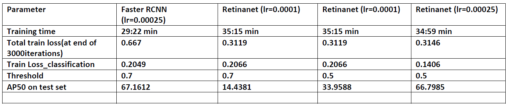

Abstract
This project fine-tunes an object detection model using Detectron2 framework. The pre-trained model used is a Faster RCNN model trained on COCO Dataset.
Dataset
Pascal VOC Dataset was used. It consists of 20 categories with 2501 training images . There are a total of 7844 instances spread across the 20 classes with 'person' class having the most instances, 2705 to be precise. 'Bus' has the least instances with a count of 131. The fine-tuned trained model is then evaluated over 2510 images.
Results

1) Faster RCNN took less time for training compared to Retinanet on the same dataset. 2) Retinanet kind of failed to locate many objects when threshold was kept to 0.7 with LR=0.0001 3) Faster RCNN outperformed all the settings of Retinanet, achieving AP50 score of 67.1612.
Faster RCNN Results: RetinaNET Results:Project information
- Language: Python
- Framework: Detectron2(Pytorch)
- IDE: Google Colab
- Architecture: Faster RCNN | RetinaNET
- Project URL: Object Detection